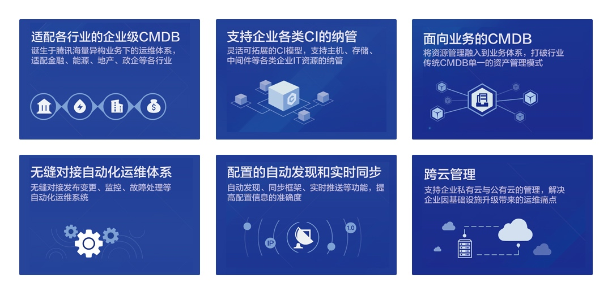

运维 "四化建设" 之标准化：配置管理标准化
自动化前，先做好标准化。
2014 年 GOT 大会上，腾讯游戏技术运营负责人刘栖铜在《腾讯游戏云的理想与实践》分享中提到运维服务的“四化建设” : 标准化、自动化、服务化、产品化是如何交付运维价值。
这里我们介绍，运维"四化建设"的基石"标准化"中的 配置管理标准化，以 蓝鲸配置平台为案例，实战分析企业如何落地配置管理标准化，以及上层 SaaS 如何消费 CMDB，为后续的自动化、数据化、智能化打牢基础。
首先，我们看下 IT 基础资源、应用在配置管理方面遇到的痛点。
配置管理的痛点
- 手工录入 CMDB 数据
- 日常的发布、变更、故障处理、日常需求处理等运维自动化系统没有消费 CMDB ，而是在 CMDB 和自动化系统中通过键盘复制粘贴主机 IP...
- 无法保证配置数据的准确性
- 未纳管应用系统，仅管理 IT 基础设施，如主机、网络设备等
- 排查问题时，无法通过可视化拓扑方式查看资源间的关联关系，比如 DB 挂了，影响了哪些业务的哪些模块
- ...
接下来，我们尝试以项目的方式，解决运维在配置管理上遇到的痛点。
1. 项目目标
建立一个权威统一的 CMDB 配置主数据，作为自动化运维平台、监控平台、运维流程平台等一系列 IT 系统的基石。

（ CMDB 是 ITIL 的基石）
确立了项目目标，接下来做技术选型。
2. 技术选型
在蓝鲸体系架构中，配置平台位于原子平台层，通过蓝鲸 PaaS 的 ESB 为上层 SaaS 提供覆盖研发运营 CI（持续集成）、CD（持续交付和持续部署）、CO（持续运营）领域的配置管理能力。

（ 配置平台 在蓝鲸体系架构中的位置）
这意味，在架构上确立了蓝鲸配置平台可 打破企业研发运营系统存在的"信息孤岛，无法实现配置管理数据互通" 的痛点，不给企业再新增一个竖井式的“烟囱”。
以下是蓝鲸配置平台（已开源）相当于传统 CMDB 的优势，正好切中运维在配置管理上遇到的痛点，同时在产品设计和架构上具有很强的扩展能力。

（ 配置平台 的核心能力）
确立了技术方案后，接下来介绍如何在企业内部实施 CMDB，使其成为自动化等 IT 系统的基石。
如何实施 CMDB，请参考场景案例： 业务上线时 CMDB 如何管理主机、CMDB 如何管理进程、CMDB 如何管理 MySQL 实例、企业 CMDB 主机实例同步至蓝鲸 CMDB、自动发现 MySQL 实例。
3. 技术发展方向
当自动化等 IT 系统越来越依赖于 CMDB，如何保证 CMDB 数据的准确性 呢？我们认为 CMDB 需要具备配置数据的审计和校验能力，并关联 ITSM 系统，完善 CMDB 中配置数据的变更流程。
自动发现采集器的开发毕竟存在开发成本，是否可以提供 开箱即用的 CI 属性和 CI 间关联关系（如数据库或中间件运行在哪台主机上，亦或是业务程序访问了哪台 DB ）的自动发现能力。
此外，IT 系统 对 CMDB 的消费程度需要持续加深，CMDB 需加强在 CI 属性、关联关系以及供上层 SaaS 消费的便利度，比如监控系统中的资源对象全部以 CMDB 中为准，不再自己保留一部分资源对象，真正实现以 CMDB 为核心的资源管理和自动化运维。
万丈高楼平地起，无论想实现自动化、数据化还是智能化，都需要把第一步的标准化做好，尤其是标准化中的配置管理标准化，切不可操之过急。
最后希望，企业的 IT 系统建设能够逐步演进、完善，让广大运维兄弟真正能 交付运维价值，体会运维这个岗位给企业带来的价值。
来吧，一起共建属于大家的 开源的 CMDB 项目！

（开源共建 CMDB ）